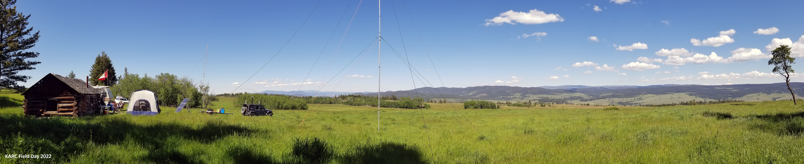
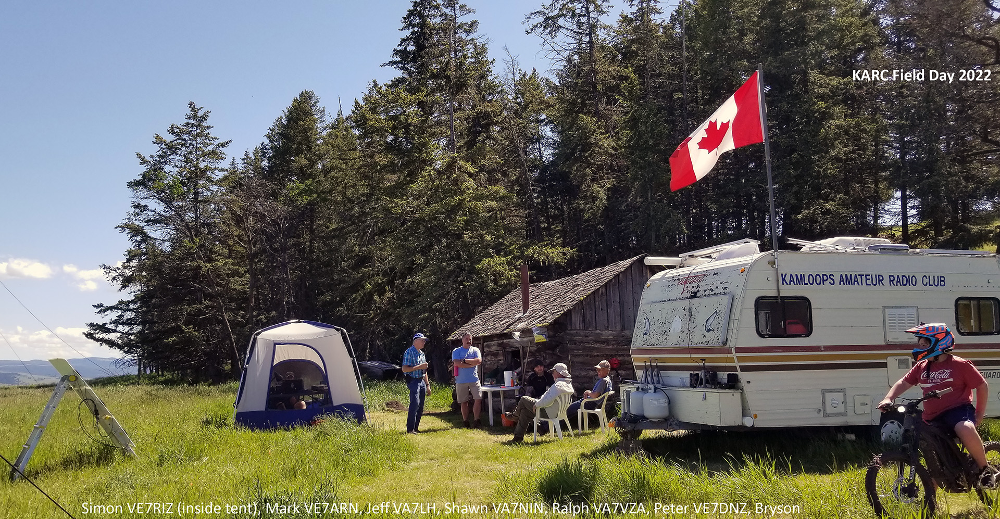
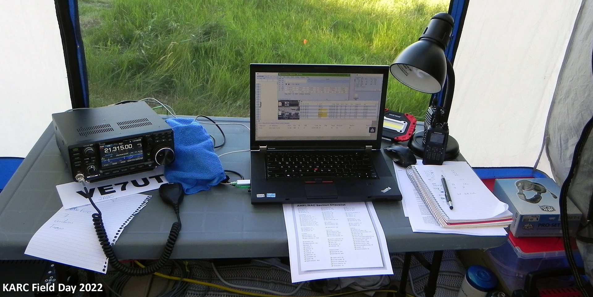
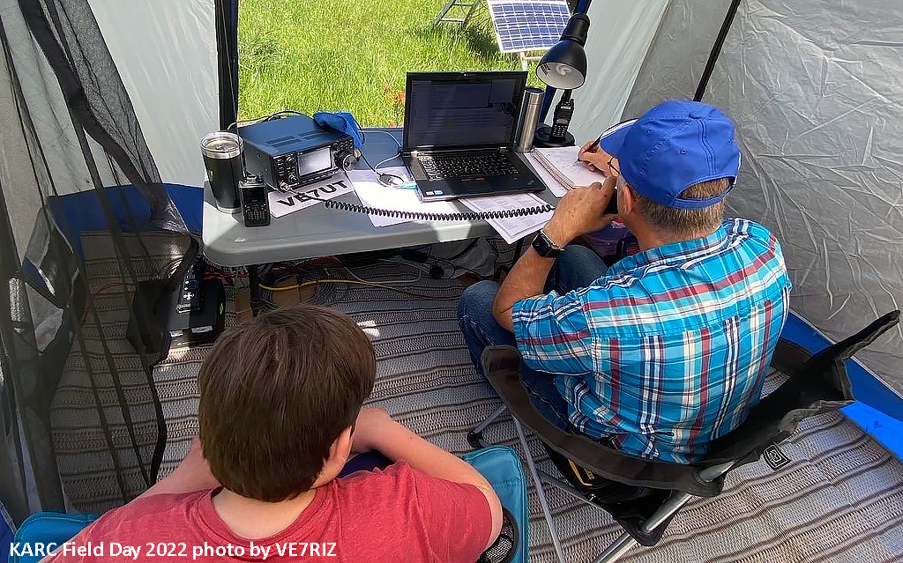
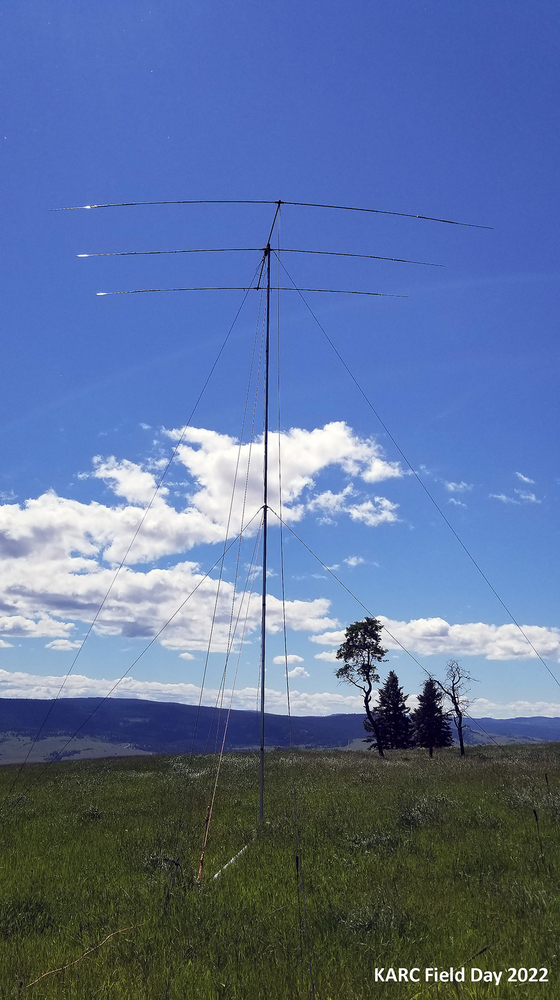

KARC Field Day 2022 -- It was awesome!
Back to StoriesStory 693
Sat, 2022-06-25 10:45 — VE7FSR


KARC Field Day 2022 was held at Peter's (VE7DNZ) farm in Knutsford near Curry Hill (aka Brigade Hill).
We enjoyed fabulous weather and made lots of contacts and had lots of fun.
We put up the club's 40-foot portable mast (aka tower) and HF beam (10/15/20m), and a 40-foot fiberglass mast from which we hung the OCF Carolina Windom HF antenna (mostly used for 40/80m).
We also had a portable APRS station broadcasting our location for Field Day.
Band conditions were great (

particularly 20m), and we made almost 200 (197, "missed it by that much") contacts over the 24-hour period.
We operated as a 2A station, using the club's IC-7300 in Ralph's tent and also the IC-7100 in Myles' Jeep.
We used solar power (3 - 100W panels) for the contest, although we did run the 3kW generator for a while on Friday evening just to make sure it worked in case we needed it.
We also lit the " VE7WWW Memorial Mosquito Coil " -- long time club members will recall Bill's passion for the mosquito coil!

Thank you to everyone who helped set up and take down, and to all those who participated or just came out for a visit!
There is a Field Day 2022 Photo Album here: legacy site link removed and I have included a few photos from the weekend to whet your appetite before you look at the complete Photo Album.

Participating were: Peter, VE7DNZ Ralph, VA7VZA Simon, VE7RIZ and his son Bryson Mark, VE7ARN Shawn, VA7NIN Jordan, VE7OSX Jeff, VA7LH Bill, VE7EAF and his XYL Susan Don, VA7LNX Myles, VE7FSR